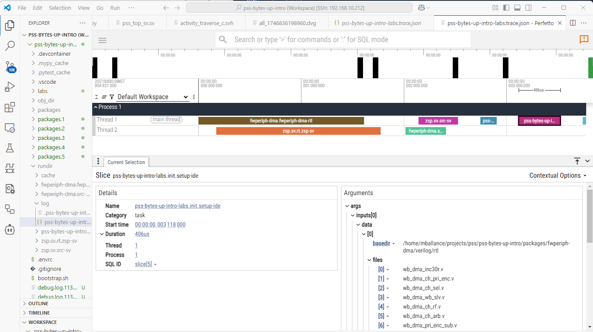

Command reference¶
dv_flow_mgr
usage: dfm [-h] [--log-level {NONE,INFO,DEBUG}] [-D NAME=VALUE]
{graph,run,show,util} ...
Named Arguments¶
- --log-level
Possible choices: NONE, INFO, DEBUG
Configures debug level [INFO, DEBUG]
- -D
Parameter override; may be used multiple times
Default:
[]
Sub-commands¶
graph¶
Generates the graph of a task
dfm graph [-h] [-f FORMAT] [--root ROOT] [-c CONFIG] [-o OUTPUT]
[-D NAME=VALUE]
[task]
Positional Arguments¶
- task
task to graph
Named Arguments¶
- -f, --format
Specifies the output format
Default:
'dot'- --root
Specifies the root directory for the flow
- -c, --config
Specifies the active configuration for the root package
- -o, --output
Specifies the output file
Default:
'-'- -D
Parameter override; may be used multiple times
Default:
[]
run¶
run a flow
dfm run [-h] [-j J] [--clean] [--root ROOT] [-c CONFIG]
[-u {log,progress,tui}] [-D NAME=VALUE]
[tasks ...]
Positional Arguments¶
- tasks
tasks to run
Named Arguments¶
- -j
Specifies degree of parallelism. Uses all cores by default
Default:
-1- --clean
Cleans the rundir before running
Default:
False- --root
Specifies the root directory for the flow
- -c, --config
Specifies the active configuration for the root package
- -u, --ui
Possible choices: log, progress, tui
Console UI style (log, progress, tui). Default: progress if terminal else log
- -D
Parameter override; may be used multiple times
Default:
[]
show¶
Display information about a task or tasks
dfm show [-h] [-a] [-v] [-D NAME=VALUE] [-c CONFIG] [task]
Positional Arguments¶
- task
task to show
Named Arguments¶
- -a, --all
Shows all tasks required for the subject to run
Default:
False- -v, --verbose
Shows additional information about tasks
Default:
False- -D
Parameter override; may be used multiple times
Default:
[]- -c, --config
Specifies the active configuration for the root package
util¶
Internal utility command
dfm util [-h] cmd ...
Positional Arguments¶
- cmd
- args
Output Directory Structure¶
DV Flow Manager creates an output directory structure that mirrors the task graph being executed. Each top-level task has a directory within the run directory. Compound tasks have a nested directory structure.
There are two top-level directory that always exist:
cache - Stores task memento data and other cross-run artifacts
log - Stores execution trace and log files
Each task directory contains some standard files:
<task_name>.exec_data.json - Information about the task inputs, outputs, and executed commands.
logfiles - Command-specific log files
Viewing Task Execution Data¶
After a run has completed, the log directory will contain a JSON-formatted execution trace file named <root_task>.trace.json. This file is formatted in Google Event Trace Format, and can be processed by tools from the Perfetto project.
An execution is shown in the Perfetto UI below. In addition to seeing information about how tasks executed with respect to each other, data about individual tasks can be seen.
